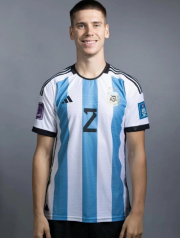
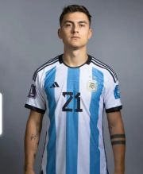

Argentina National Football Team Selección Argentina de Fútbol 阿根廷国家足球队
斯卡洛尼（Scaloni）全名是Lionel Sebastián Scaloni，他是一位阿根廷足球运动员和现任阿根廷国家足球队主教练。斯卡洛尼于1978年5月16日出生在阿根廷罗萨里奥市，他的职业生涯始于阿根廷俱乐部新奥尔良斯，之后他还效力于西班牙的拉科鲁尼亚、英格兰的西汉姆联和意大利的拉齐奥等俱乐部。 斯卡洛尼在国家队方面也有着丰富的经验，他代表阿根廷国家队出场40次，并参加了2006年和2010年的世界杯。作为一名右后卫，斯卡洛尼以其出色的防守能力和攻击意识而闻名。 在结束职业生涯后，斯卡洛尼开始从事教练工作，并于2018年被任命为阿根廷国家队的临时主教练。在他的带领下，阿根廷国家队在2019年美洲杯上取得了亚军的成绩。随后，斯卡洛尼被正式任命为阿根廷国家队的主教练，并带领球队夺得世界杯冠军。
艾马尔（Eduardo Emilio "Chacho" Berizzo）是阿根廷足球教练和前职业足球运动员。他于1969年11月13日出生在阿根廷的拉普拉塔市。作为一名中后卫，他在职业生涯中效力于多家俱乐部，包括纽维尔老男孩、里瓦尔多和塞尔塔等。 在执教方面，艾马尔曾担任智利国家队和西班牙塞维利亚队的助理教练。他还曾在塞尔塔担任主教练，带领球队在2016-2017赛季的西甲联赛中取得了不错的成绩。此外，他还曾在墨西哥的克鲁斯·阿苏尔和阿根廷的拉普拉塔大学执教。 艾马尔于2021年成为阿根廷国家队的助教，与主教练利奥·梅西一起工作。他在国家队中的角色是协助梅西制定战术和训练计划，并提供技术指导和战术建议。
萨穆埃尔（Jorge Sampaoli）是一位阿根廷足球教练，曾经担任过阿根廷国家队的助教。他于1960年出生在阿根廷圣菲省的Casilda市。 萨穆埃尔在足球领域有着丰富的经验和卓越的执教能力。他曾经执教过多支阿根廷和智利的俱乐部球队，包括罗萨里奥中央、阿特莱提科、大学生、欧洲巴勒莫和圣洛伦索等。在执教智利国家队期间，他带领球队获得了2015年美洲杯冠军，成为了智利足球历史上的重要人物。 作为阿根廷国家队的助教，萨穆埃尔与主教练一起负责球队的训练和战术安排。他的执教风格以进攻为主，注重球队的整体配合和进攻组织。他在国家队的经历使他对阿根廷足球有着深入的了解，并为球队的发展做出了重要贡献。
阿亚拉（Alejandro Ayala）是阿根廷国家足球队的助教之一。他在足球界有着丰富的经验和出色的执教能力。 阿亚拉在2004年开始了他的执教生涯，最初在阿根廷的一些俱乐部担任助理教练。他随后加入了阿根廷国家队的教练组，并在2014年世界杯期间担任助教。他的职责包括协助主教练制定训练计划、分析对手和球员的表现，并提供战术建议。 阿亚拉在国家队的工作中展现出了他的专业素养和才华。他与主教练密切合作，为球队的成功做出了重要贡献。他的严谨和细致的工作态度以及对足球的深入理解使他成为了国家队教练组中不可或缺的一员。

阿尔玛尼（Emiliano Martínez）是一名阿根廷足球运动员，出生于1992年9月2日。他司职门将，目前效力于英超球队阿森纳足球俱乐部，并代表阿根廷国家队参加国际比赛。 阿尔玛尼在青年时期效力于阿根廷球队独立队，并于2010年进入一线队。在独立队效力期间，他展现出了出色的门将才华，并在2011年帮助球队赢得了阿根廷顶级联赛冠军。 2012年，阿尔玛尼转会至英超球队阿森纳，并成为球队的后备门将。在过去的几个赛季中，他主要作为替补门将出场，但在2020-2021赛季，由于主力门将伯恩德·莱诺的受伤，他获得了更多的上场机会，并表现出色。

福伊特（Lucas Alario）是阿根廷足球国家队的一名前锋球员。他于1992年10月8日出生在阿根廷圣菲省圣尼古拉斯市。福伊特在青年时期效力于阿根廷俱乐部科隆，并在2015年转会至德国勒沃库森队。 福伊特在勒沃库森队的表现引起了广泛关注，他在2015-2016赛季的德甲联赛中打入17球，成为球队的主要得分手之一。他的出色表现也使他获得了入选阿根廷国家队的机会。 福伊特于2016年首次代表阿根廷国家队出场，并在同年的美洲杯比赛中打入了一球。他的速度、技术和射门能力使他成为球队进攻线上的重要一员。他在国家队的表现也为他赢得了球迷的喜爱和认可。
塔利亚飞科（Talleres Falcón）是阿根廷足球国家队的一名球员，他出生于1992年6月10日，司职中场。塔利亚飞科在阿根廷国内俱乐部塔利亚雷斯效力，他也是该俱乐部的队长。 塔利亚飞科在职业生涯中展现出了出色的技术和领导能力。他擅长控球和传球，并且在比赛中展现出了出色的战术意识。他的身体素质出色，具备较强的爆发力和耐力，能够在比赛中持续发挥高水平的表现。 塔利亚飞科在阿根廷国家队中也有着不错的表现。他代表国家队参加了多场国际比赛，包括南美洲解放者杯和世界杯预选赛等重要赛事。他在国家队中展现出了出色的技术和领导能力，为球队做出了重要贡献。
贡萨洛·蒙铁尔（Gonzalo Montiel，1997年1月1日-），出生于阿根廷冈萨雷斯卡坦，阿根廷男子足球运动员，司职后卫，现效力于塞维利亚足球俱乐部。 蒙铁尔出道于河床足球俱乐部，生涯随队获得1次阿根廷甲级联赛冠军、1次南美解放者杯冠军和2次南美优胜者杯冠军。2021年，加盟塞维利亚；同年，随阿根廷队获2021年美洲杯冠军。2022年，随阿根廷国家队夺得2022欧美超级杯冠军。2022年12月19日，随阿根廷点球7（3）-5（3）战胜法国获2022年卡塔尔世界杯冠军。2023年6月1日，随塞维利亚点球大战5-2战胜罗马获2022-23赛季欧联杯冠军。
帕雷德斯（Nicolas Pareja）是一名阿根廷足球运动员，出生于1984年1月19日。他主要司职中后卫，也可以担任右后卫的位置。 帕雷德斯职业生涯的起点是在阿根廷的本菲卡青年队，2004年他被提升到一线队，并在2005年首次亮相。随后，他在2006年转会至比利时的安德莱赫特俱乐部，为球队效力了两个赛季。 2008年，帕雷德斯加盟西班牙的塞维利亚足球俱乐部，他在塞维利亚度过了八个赛季，成为球队的主力中后卫之一。在这期间，他帮助球队赢得了多个西班牙国内和欧洲赛事的冠军，包括两次欧洲联赛冠军。
佩泽拉（Pezzella）全名戈恩萨洛·佩泽拉（Gonzalo Pezzella），是一名阿根廷足球运动员，出生于1991年6月27日，身高185厘米，司职中后卫。 佩泽拉职业生涯的起点是在阿根廷的河床足球俱乐部（Club Atlético River Plate），他在2011年首次代表一线队亮相。在河床队效力期间，他展现出了出色的防守能力和领导才能，成为球队的重要一员。 佩泽拉也是阿根廷国家队的一员，他在2018年首次代表国家队出场。尽管他在国家队的出场机会相对较少，但他在俱乐部的出色表现使他成为备受关注的后卫之一。
罗德里戈·德保罗（Rodrigo de Paul），全名罗德里戈·哈维尔·德保罗（Rodrigo Javier de Paul），1994年5月24日出生于 阿根廷 萨兰迪，阿根廷足球运动员，司职前腰，现效力于西班牙的 马德里竞技足球俱乐部 。 2016年，德保罗加盟 乌迪内斯 开始欧洲之旅。 2021年7月，德保罗转会加盟 马竞 。 国家队荣誉： 2021年，德保罗帮助阿根廷国家队夺得美洲杯冠军。 2022年，德保罗帮助阿根廷国家队夺得世界杯冠军以及欧美杯冠军。
阿库尼亚（Emiliano Martín Acuña）是一名阿根廷足球运动员，出生于1992年10月28日，司职中场。他在职业生涯中效力过多支俱乐部，包括阿根廷的拉努斯队、里奥内格罗队和博卡青年队，以及葡萄牙的布拉加队和西班牙的赫塔菲队。 阿库尼亚在2016年首次代表阿根廷国家队亮相，并在随后的比赛中多次入选国家队阵容。他在国家队中的表现稳定，展现出了出色的技术和身体素质。他在中场位置上具备出色的控球和传球能力，能够为球队提供稳定的组织和进攻威胁。 阿库尼亚在俱乐部和国家队的表现都得到了球迷和专家的认可。他是一名全情投入的球员，总是全力以赴地为球队争取胜利。他的职业态度和努力精神使他成为球队中的关键球员之一。
胡利安·阿尔瓦雷斯（2000年1月31日-），阿根廷男子足球运动员，司职前锋，现效力于英超联赛曼彻斯特城足球俱乐部。 2021年11月26日，随河床4比0大胜阿根廷竞技提前获2021赛季阿根廷甲级联赛冠军。2022年6月2日，随阿根廷队获2022年南美欧洲超级杯冠军。12月19日，2022年卡塔尔世界杯决赛，随阿根廷点球7（3）-5（3）战胜法国获冠军。2023年6月3日，随曼城2-1力克曼联获2022-23赛季英格兰足总杯冠军；6月11日，随曼城1-0战胜国际米兰获2022-23赛季欧冠冠军。
梅西（Lionel Messi），全名Lionel Andrés Messi，出生于1987年6月24日，是阿根廷足球国家队的队长和前锋。他被广泛认为是现代足球史上最伟大的球员之一。 梅西在阿根廷罗萨里奥市出生并开始了自己的足球生涯。他在年轻时就展现出了非凡的天赋和技术，很快就引起了巴塞罗那俱乐部的注意。2003年，他加入了巴塞罗那青训营，并在2004年进入了一线队。 在巴塞罗那，梅西成为了一名出色的球员，他的速度、敏捷性和技术造诣令人惊叹。他与队友们形成了黄金一代，包括伊涅斯塔、哈维和普约尔等人，共同帮助巴塞罗那赢得了多个国内和国际冠军，包括四次欧洲冠军联赛冠军。 在国家队方面，梅西代表阿根廷参加了多届国际比赛，包括世界杯和美洲杯。，他是阿根廷队的核心球员和领袖，他带领球队在2019年美洲杯上获得亚军以及2022年夺得世界杯冠军。
安赫尔·迪玛利亚（Ángel Di María），1988年2月14日出生于阿根廷罗萨里奥，是一名阿根廷职业足球运动员。他司职边锋，也可以担任中场和前锋位置。 迪玛利亚的职业生涯始于阿根廷球队罗萨里奥中央，2007年他转会至葡萄牙球队本菲卡。在本菲卡期间，他展现出出色的技术和速度，帮助球队赢得了多项荣誉，包括两次葡萄牙超级联赛冠军和一次葡萄牙杯冠军。 2010年，迪玛利亚转会至西班牙豪门皇家马德里。在皇马的四个赛季中，他与克里斯蒂亚诺·罗纳尔多和卡里姆·本泽马等球员组成了“BBC”三叉戟，帮助球队赢得了多个国内和国际冠军，包括一次西甲联赛冠军和一次欧冠冠军。 2014年，迪玛利亚转会至英超球队曼彻斯特联。然而，由于伤病问题和球队战术调整，他在曼联的表现并不出色。2015年，他转会至法甲球队巴黎圣日耳曼，并成为球队的重要一员。在巴黎圣日耳曼，他多次帮助球队赢得法甲联赛冠军和法国杯冠军。
赫罗尼莫·鲁利（Geronimo Rulli，1992年5月20日-），出生于拉普拉塔，阿根廷男子足球运动员，司职门将，现效力于阿贾克斯足球俱乐部。 鲁利职业生涯初期效力过拉普拉塔大学生、马尔多纳多等球队。2014年，加盟皇家社会。2019年，被租借至蒙彼利埃。2020年，加盟比利亚雷亚尔。2021年，随队获2021年欧洲超级杯亚军、2020-21赛季欧罗巴联赛冠军并入选赛事最佳阵容。2022年，随阿根廷队获2022年南美欧洲超级杯冠军。 2022年12月19日，2022年卡塔尔世界杯决赛，随阿根廷点球7（3）-5（3）战胜法国获冠军。
C.罗梅罗（Cristian Romero）是一名阿根廷足球运动员，出生于1998年4月27日。他司职中后卫，目前效力于意甲球队亚特兰大（Atalanta）和阿根廷国家队。 罗梅罗在阿根廷的足球生涯开始于他加入贝尔格拉诺（Belgrano）青训系统。2018年，他转会加盟意甲球队热那亚（Genoa），并在那里展现出了出色的表现。他的出色表现引起了亚特兰大的注意，于2019年夏天以租借的形式加盟该队，并在2020年正式转会。 在亚特兰大，罗梅罗成为了球队的主力中后卫之一，并展现出了出色的防守能力和出色的传球技术。他的稳定表现和出色的统治力使他成为了意甲联赛中备受瞩目的年轻球员之一。
罗德里戈·帕拉西奥（Rodrigo Palacio），1982年2月5日出生于阿根廷布兰卡港，拥有阿根廷/西班牙双重国籍，阿根廷职业足球运动员，司职前锋。 帕拉西奥出身于阿根廷的贝亚维斯塔足球俱乐部青训营。2002年，帕拉西奥转会至飓风足球俱乐部开始职业生涯。2003年，帕拉西奥加盟阿甲的班菲尔德足球俱乐部。2005年，帕拉西奥转会至博卡青年足球俱乐部。2009年，帕拉西奥登陆意甲赛场加盟热那亚足球俱乐部。2012年，帕拉西奥加盟国际米兰足球俱乐部。 2017年8月，帕拉西奥自由转会博洛尼亚足球俱乐部。2021年8月，帕拉西奥加盟布雷西亚足球俱乐部。2022年，帕拉西奥宣布退役。
阿根廷足球国家队球员阿尔瓦罗·科雷亚（Alvaro Correa）是一名年轻有潜力的中场球员。他出生于1997年5月9日，身高约1.80米，司职中场。 科雷亚在青年时期效力于阿根廷俱乐部拉努斯（Lanus），在那里展现出了出色的技术和悍勇的表现。他的出色表现引起了国家队教练组的注意，并于2021年首次入选阿根廷国家队。 科雷亚在国家队的首秀是在2021年对阵智利的比赛中，他展现出了出色的控球和传球能力。他在场上表现出了成熟的态度和对比赛的热情，展现出了他在中场的技术和战术能力。
蒂亚戈·阿尔马达（Thiago Almada），2001年4月26日出生于阿根廷布宜诺斯艾利斯，阿根廷足球运动员，司职中场，现效力于亚特兰大联足球俱乐部。 2022年，阿尔马达随阿根廷国家队夺得2022年卡塔尔世界杯冠军。
戈麦斯（Giovani Lo Celso）是一名阿根廷足球运动员，出生于1996年4月9日。他司职中场，目前效力于英超球队热刺队，并代表阿根廷国家队参加国际比赛。 戈麦斯的职业生涯始于阿根廷俱乐部罗森中央，他在2015年首次亮相一线队，并迅速展现出出色的技术和潜力。2016年，他转会至法甲球队巴黎圣日耳曼，但在那里的表现受到了一些限制，因此在2018年被租借到西甲球队皇家贝蒂斯。 在皇家贝蒂斯的两个赛季中，戈麦斯展现出了出色的表现，成为球队的核心中场之一。他的技术娴熟，擅长控球和传球，并且在进攻端也有出色的创造力和射门能力。
罗德里格斯（Rodríguez）全名胡安·费尔南多·罗德里格斯（Juan Fernando Rodríguez），是阿根廷足球国家队的一名球员。他出生于1991年7月12日，司职中场。 罗德里格斯在阿根廷国内俱乐部开始了自己的职业足球生涯，先后效力于阿根廷顶级联赛球队博卡青年和河床。在这两支球队，他展现出了出色的技术和创造力，成为球队中的关键人物。 他的出色表现引起了国际足球界的关注，2014年，罗德里格斯被阿根廷国家队征召，并参加了巴西世界杯。在世界杯上，他表现出色，成为阿根廷队的核心球员之一，帮助球队进入了决赛。 除了国家队，罗德里格斯还曾效力于欧洲豪门球队皇家马德里和拜仁慕尼黑。在这两支球队，他继续展现出了自己的实力和技术，成为球队中的重要一员。
尼古拉斯·奥塔门迪（Nicolás Otamendi），全名：尼古拉斯·埃尔南·贡萨洛·奥塔门迪（Nicolás Hernán Gonzalo Otamendi），1988年2月12日出生于阿根廷布宜诺斯艾利斯，阿根廷足球运动员，场上司职中后卫，现效力于英格兰足球超级联赛的曼彻斯特城足球俱乐部。
亚历克西斯·麦卡利斯特（西班牙语：Alexis Mac Allister；1998年12月24日－），阿根廷足球运动员，现效力英超俱乐部布莱顿，司职中场。 同时，亦是阿根廷国家足球队成员之一，他曾随阿根廷国家队参加2020东京奥运及2022年国际足联世界杯。

迪巴拉（Paulo Dybala）是阿根廷足球国家队的一名球员，出生于1993年11月15日。他是一名出色的前锋，也可以在中场位置发挥作用。迪巴拉在足球场上展现出了出色的技术和创造力，他的速度、敏捷性和射门能力使他成为一名非常危险的进攻球员。 迪巴拉的职业生涯始于阿根廷的球队Instituto AC Cordoba，他在那里展现出了出色的表现，吸引了意大利豪门尤文图斯的注意。2015年，他加入了尤文图斯，并在那里取得了巨大的成功。他与队友们一起赢得了多个意甲冠军和意大利杯冠军，并在欧洲冠军联赛中展现出了出色的表现。 迪巴拉的球风被认为是技术流和灵活的，他擅长运球、过人和射门。他的球风与阿根廷足球的传统相契合，他被认为是阿根廷足球的未来之星之一。
劳塔罗（Lautaro Martínez）是一名阿根廷足球运动员，出生于1997年8月22日。他司职前锋，目前效力于意大利足球俱乐部国际米兰，并代表阿根廷国家队参加国际比赛。 劳塔罗在阿根廷的足球生涯始于他加入罗萨里奥中央足球俱乐部的青训系统。2015年，他首次代表一线队亮相，并在2016年成为球队的主力前锋。在罗萨里奥中央期间，他展现出了出色的射门技巧、速度和灵活性，成为球队的得分利器。 2018年，劳塔罗转会至意大利国际米兰。他在国际米兰的表现非常出色，成为球队的核心球员之一。他与队友罗梅卢·卢卡库搭档，为球队贡献了大量进球和助攻。他的技术娴熟、身体强壮，能够在禁区内制造威胁，并且具备出色的头球能力。
艾米利亚诺（Emiliano）是阿根廷足球国家队的一名球员，他的全名是艾米利亚诺·马丁内斯（Emiliano Martínez）。他于1992年9月2日出生在阿根廷布宜诺斯艾利斯省马尔德普拉塔市。 艾米利亚诺是一名出色的门将，身高1.94米，他以其出色的反应速度、敏捷性和出色的扑救能力而闻名。他在青年时期效力于阿根廷俱乐部独立队的青训系统，2010年进入一线队，并在2012年首次代表独立队出场。 2018年，艾米利亚诺转会至英超球队阿森纳，并成为球队的替补门将。然而，在2020年，由于主力门将伯恩德·莱诺受伤，艾米利亚诺得到了首发机会，并表现出色。他在2020-2021赛季的表现引起了广泛关注，成为阿森纳的主力门将。
恩佐（Enzo）是阿根廷足球国家队的一名球员，全名为恩佐·佩雷斯（Enzo Pérez）。他于1986年2月22日出生在阿根廷圣菲省的马科斯·胡阿雷斯市。恩佐是一名中场球员，主要司职中场组织者和防守型中场。 恩佐的职业足球生涯始于阿根廷的新奇尔斯青年队，之后他加入了阿根廷顶级联赛球队埃斯图迪安特斯，并在2003年首次亮相一线队。在埃斯图迪安特斯效力期间，他展现出了出色的技术和战术意识，成为球队的核心球员。 2011年，恩佐转会至葡萄牙豪门本菲卡，他在那里度过了六个赛季，赢得了多个联赛冠军和国内杯赛冠军。他在本菲卡的表现引起了国际足坛的关注，被认为是一名出色的中场球员。
利桑德罗（Lisandro Martínez）是一名阿根廷足球运动员，出生于1998年1月18日，司职中场和后卫。他目前效力于荷甲球队阿贾克斯，并且也是阿根廷国家队的成员。 利桑德罗在阿根廷的青年足球联赛中开始了自己的职业生涯，他在2016年加入了阿根廷俱乐部纽维尔老男孩，并在2018年首次代表一线队亮相。他在纽维尔老男孩的表现引起了阿贾克斯的注意，于2019年夏天加入了这支荷甲豪门球队。 在阿贾克斯，利桑德罗迅速成为球队的关键球员之一。他的出色表现和多功能性使他能够在中场和后卫位置上发挥作用。他的防守能力出色，能够拦截球和抢断，并且在进攻端也有出色的传球和组织能力。
利莫利纳（Emiliano Martínez），全名埃米利亚诺·阿尔贝托·马尔蒂内斯（Emiliano Alberto Martínez），是一名阿根廷足球运动员，出生于1992年9月2日。他司职守门员，目前效力于英超球队阿斯顿维拉足球俱乐部，并代表阿根廷国家队参加国际比赛。 利莫利纳在阿根廷的青训阶段效力于独立队，2010年进入一线队，并在2012年获得了首秀机会。然而，在独立队的竞争激烈，他在2012年至2017年期间被租借到多支球队，包括英超球队沃特福德。 2017年，利莫利纳转会加盟英超豪门阿森纳足球俱乐部。在阿森纳，他作为替补守门员备受重视，并在一些杯赛和欧洲联赛中获得出场机会。然而，由于主力守门员伯特·莱诺的伤病，利莫利纳在2020年底成为了球队的主力守门员，并在接下来的比赛中表现出色。
该网页为课程相关设计，如有雷同，纯属巧合 若有疑问请联系 电话：*********** 邮箱：**********@qq.com